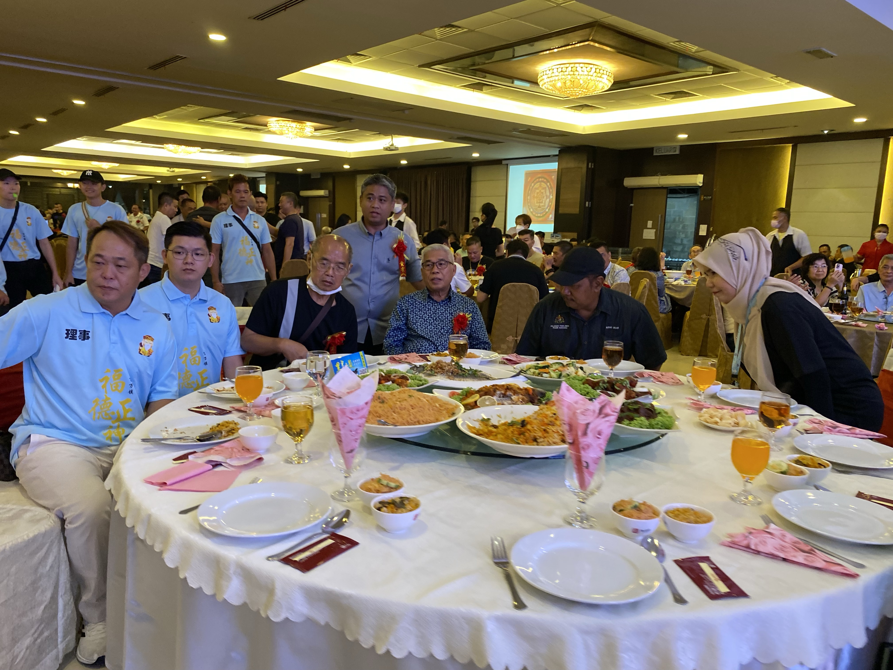
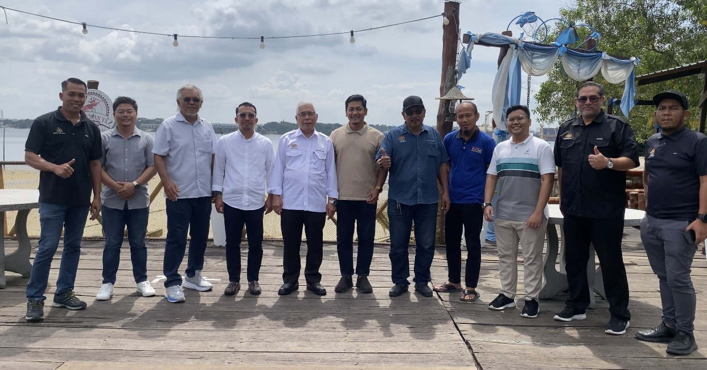
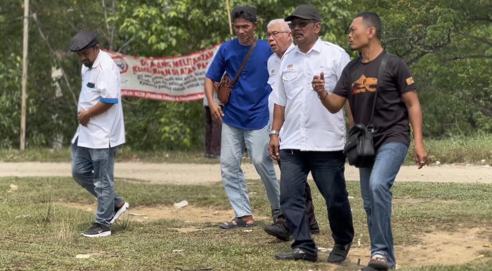
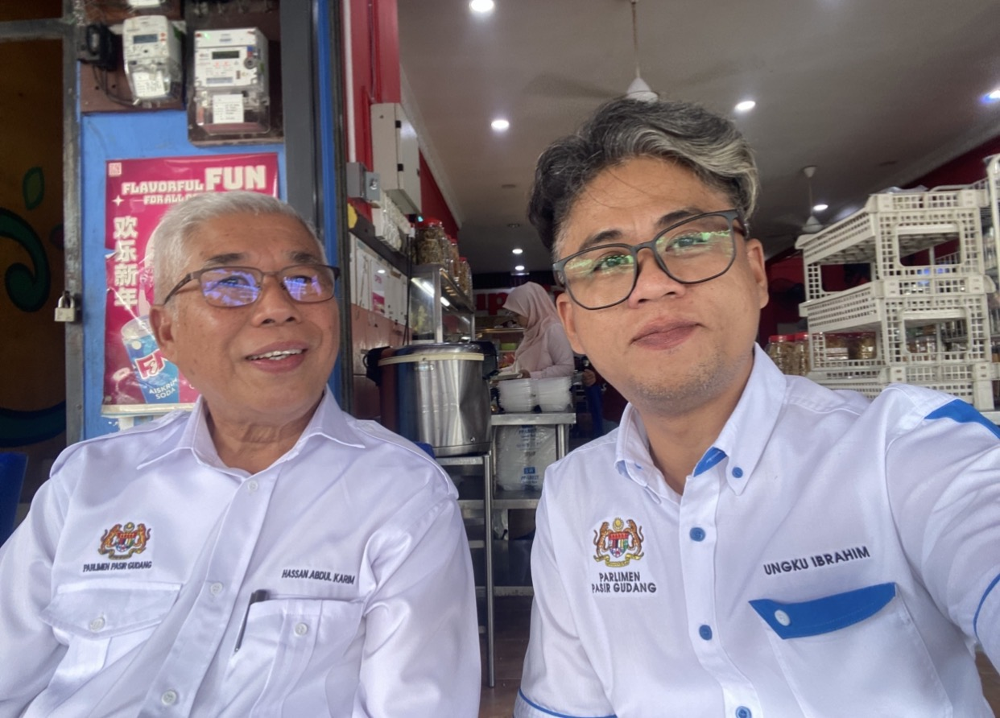
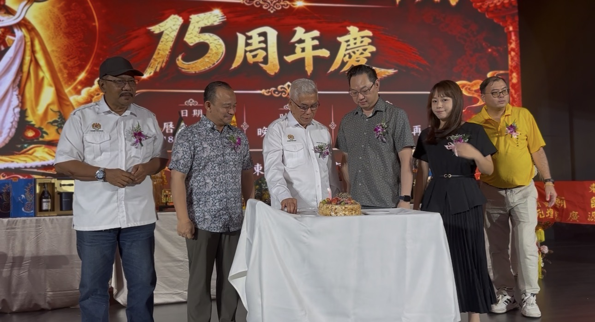
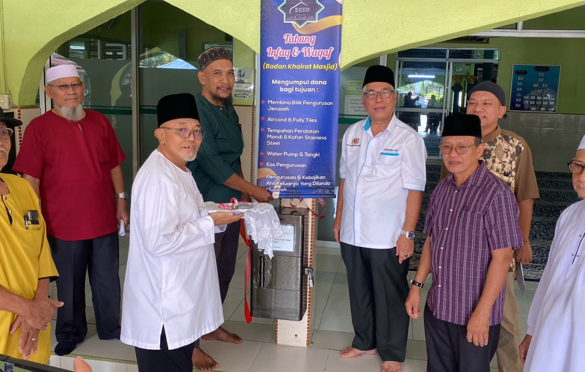
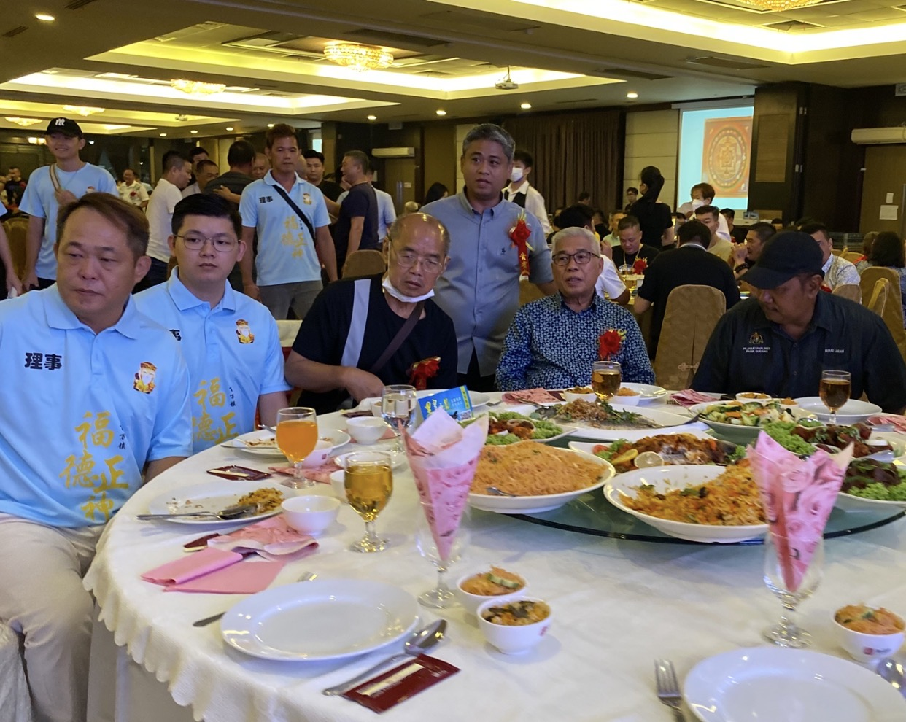
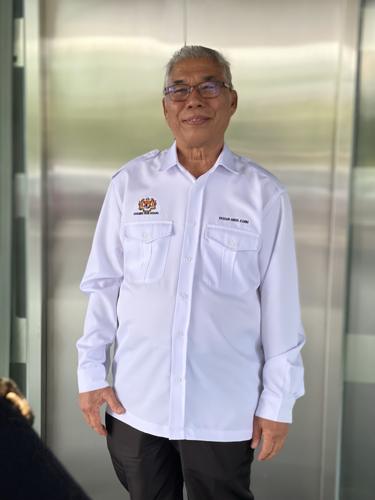
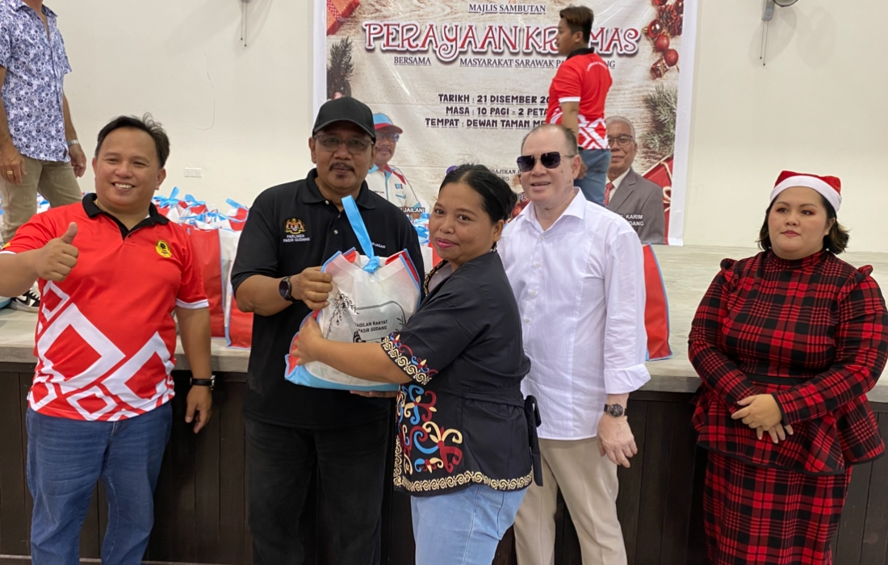
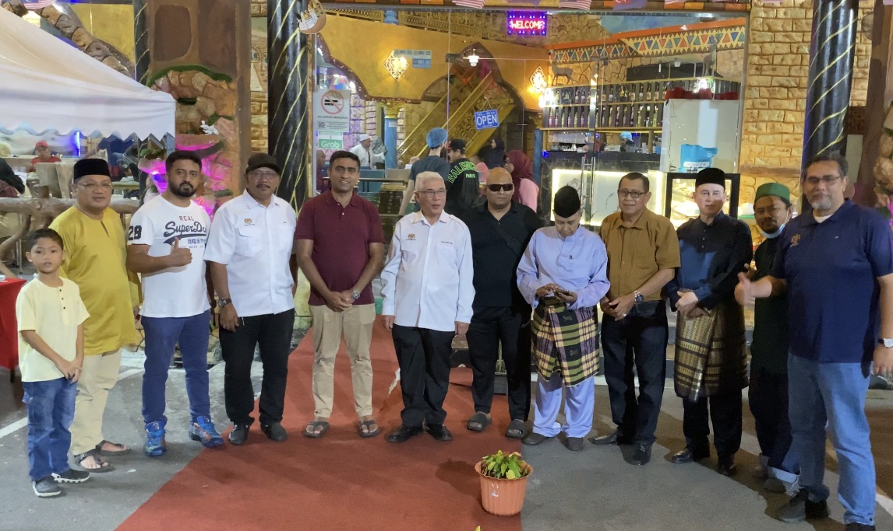
Perubahan sedang berlaku. Ayuh sertai keluarga besar KEADILAN bagi meneruskan agenda reformasi di Pasir Gudang. Anda adalah sebahagian daripada sejarah perjuangan rakyat ini!
Pejabat Parlimen P159 Pasir Gudang menegaskan komitmen berterusan dalam membela isu perumahan mampu milik, kebajikan pekerja perindustrian, dan kelestarian alam sekitar kawasan setempat...
Siri program turun padang bersama kepimpinan KEADILAN Cabang dan Pejabat Khidmat Parlimen bagi menyantuni pesakit terlantar, bantuan persekolahan, dan program infaq komuniti setempat...
Ahli Parlimen Pasir Gudang
Konsisten memperjuangkan hak asasi, keadilan sosial, dan integriti institusi negara demi kemakmuran rakyat Pasir Gudang.
Imbas kod QR TikTok untuk menonton siaran langsung sidang parlimen, aktiviti lapangan, dan kenyataan rasmi Penerangan Pasir Gudang.
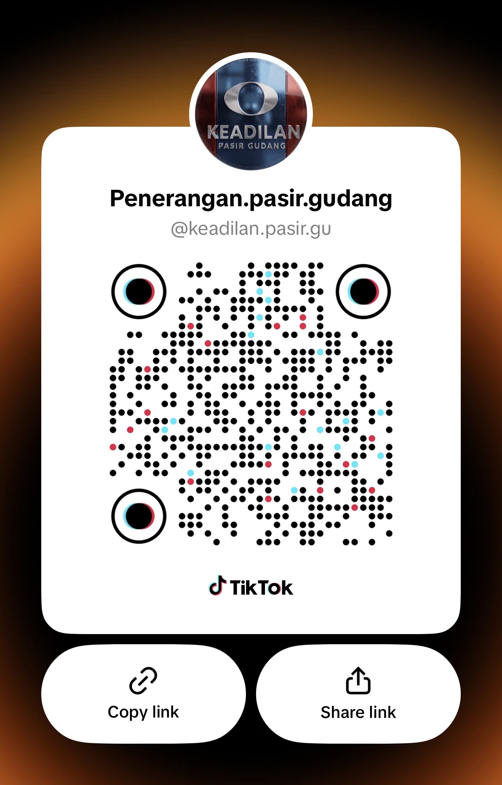
Imbas untuk Ikuti di TikTok
PUSAT KHIDMAT RAKYAT PARLIMEN PASIR GUDANG,
11-03 BLOK A, JALAN KOTA 1,
TAMAN CAHAYA KOTA PUTERI,
81750 MASAI, JOHOR.
Waktu Kaunter: Ahad – Khamis (9.00 Pagi – 5.00 Petang)
PUSAT KHIDMAT RAKYAT PARLIMEN PASIR GUDANG,
11-03 BLOK A, JALAN KOTA 1,
TAMAN CAHAYA KOTA PUTERI,
81750 MASAI, JOHOR.
Urusan Keanggotaan, Sayap AMK & Wanita Pasir Gudang